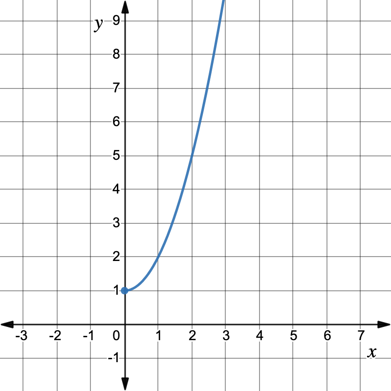
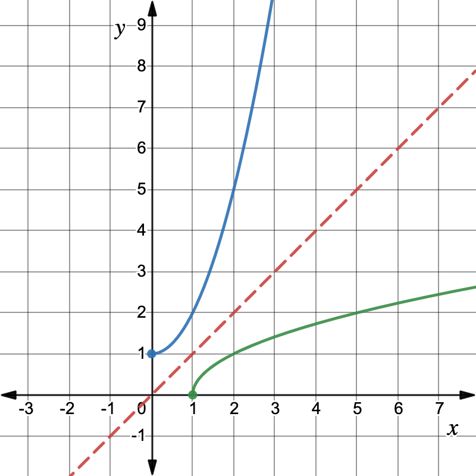
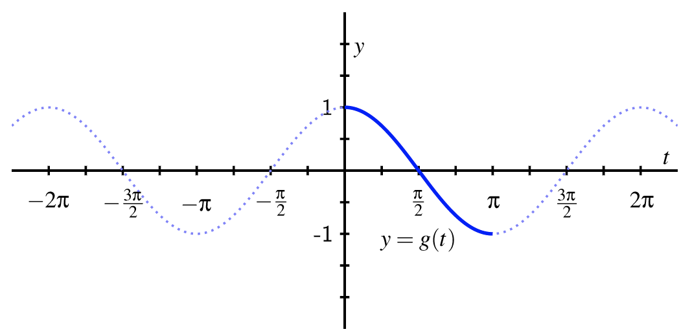
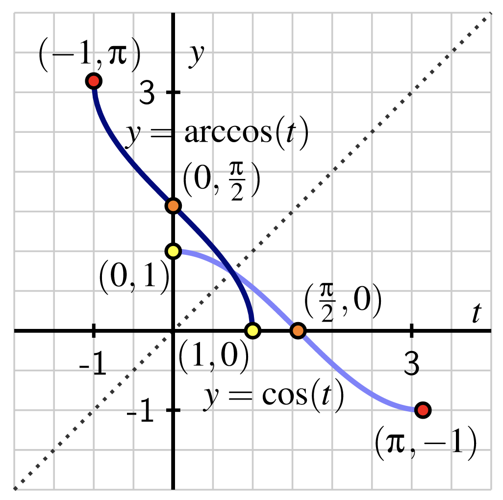
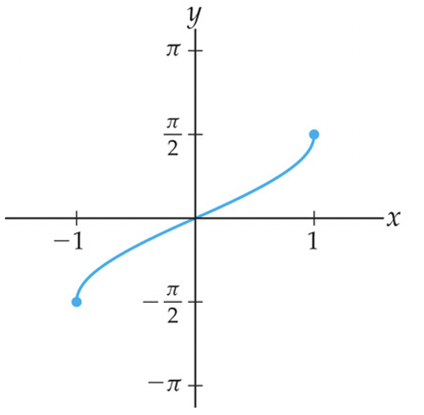
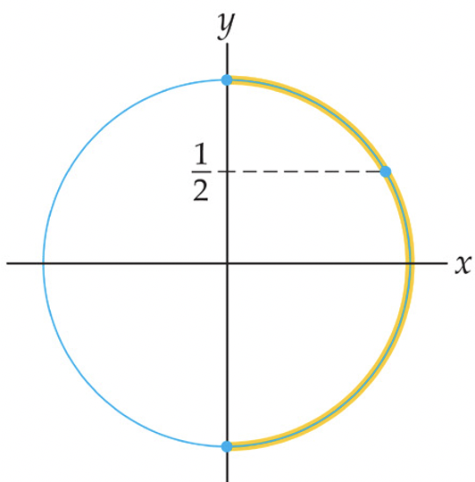
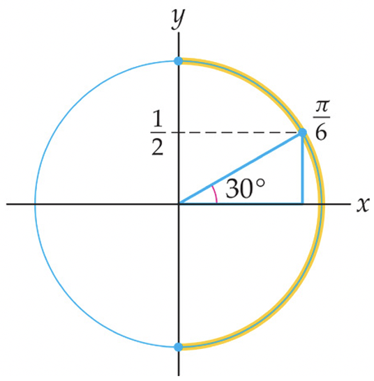
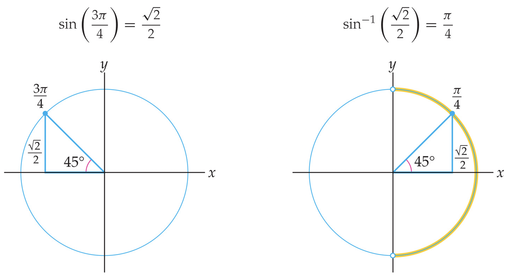
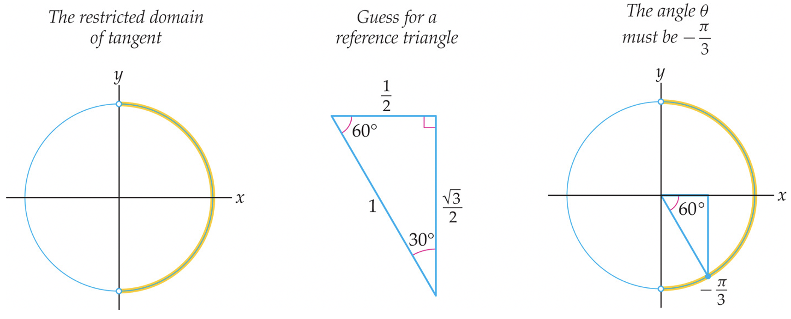

Section 8.4 Defining Inverse Trigonometric Functions
Subsection 8.4.1 Learning Goals
-
Recall that functions must be one-to-one in order to have an inverse. As a result, we must restrict the domains of the trigonometric functions in order to define their (partial) inverse functions.
-
Define the inverse functions arccosine, arcsine, and arctangent, and determine their domains and ranges.
-
Practice calculating values of inverse trigonometric functions, and learn what common mistakes to avoid while doing so.
Subsection 8.4.2 A Brief Recap of Inverse Functions
Recall from Section 6.1 that a function has an inverse only if the function is one-to-one, or in other words that it passes the Horizontal Line Test. This allows us to "reverse" a function \(y=f(x)\) to obtain a function \(f^{-1}(y) = x\text{.}\)
Example 8.4.1.
Example 8.4.2.
Given a one-to-one function \(f(x)\text{,}\) its inverse is by definition the function \(f^{-1}(x)\) with the property that
\begin{equation*}
f^{-1}(f(x)) = x\text{ and } f(f^{-1}(y)) = y
\end{equation*}
for all \(x\) in the domain of \(f\) and for all \(y\) in the domain of \(f^{-1}\text{.}\)
Example 8.4.3.
For \(f(x) = x^3\text{,}\) we have
\begin{equation*}
f^{-1}(f(x)) = \sqrt[3]{x^3} = x,\text{ for all real numbers } x
\end{equation*}
\begin{equation*}
f(f^{-1}(y)) = (\sqrt[3]{y})^3 = y,\text{ for all real numbers } y
\end{equation*}
Example 8.4.4.
For \(f(x) = e^x\text{,}\) we have
\begin{equation*}
f^{-1}(f(x)) = \ln(e^x) = x,\text{ for all real numbers } x
\end{equation*}
\begin{equation*}
f(f^{-1}(y)) = e^{\ln y} = y,\text{ for all positive real numbers } y
\end{equation*}
If a function fails to be one-to-one, then it does not have an inverse. However, we can restrict the domain on which we consider the function in order to make the remaining function one-to-one, and define an inverse of the function restricted to that domain.
Example 8.4.5.
For example, the function \(f(x) = x^2+1\) fails the horizontal line test and therefore is not one-to one on the domain \((-\infty,\infty)\text{.}\) But on the restricted domain \([0,\infty)\text{,}\) the function \(f(x) = x^2+1\) is one-to-one, as we can see in Figure 8.4.6 below:

From the graph in Figure 8.4.6 we also see that the range of \(f(x)\) is \([1,\infty)\text{.}\) This tells us that the domain of \(f^{-1}\) is \([1,\infty)\) before we do any computations.
A formula for the inverse for \(f\) can be computed via
\begin{equation*}
\begin{aligned}y \amp = x^2+1\\ y-1 \amp = x^2\\ \pm\sqrt{y-1} \amp = x \end{aligned}
\end{equation*}
It seems that we have two formulas for \(f^{-1}\text{,}\) consisting of \(\sqrt{y-1}\) and \(-\sqrt{y-1}\text{.}\) However, since we have restricted the domain for \(x\) to \(x\geq 0\text{,}\) we only want the positive square root and can write
\begin{equation*}
x = f^{-1}(y) = \sqrt{y-1}
\end{equation*}
Now we can verify explicitly that the domain of \(f^{-1}\) is the range \([1,\infty)\) of \(f\text{,}\) since we need \(y-1\geq 0\) within the square root, meaning that \(y\geq 1\text{.}\)
Let’s check our work both algebraically and geometrically:
We can check that the definition of an inverse function is satisfied by simplifying the compositions \(f\circ f^{-1}\) and \(f^{-1}\circ f\text{:}\)
\begin{equation*}
f^{-1}(f(x)) = \sqrt{(x^2+1)-1} = \sqrt{x^2} = x,\text{ for all } x\geq 0
\end{equation*}
\begin{equation*}
f(f^{-1}(y)) = (\sqrt{y-1})^2+1 = (y-1)+1 = y,\text{ for all } y\geq 1
\end{equation*}
Visually, we see that the graph of \(f^{-1}(x) = \sqrt{x-1}\) is the graph of \(f(x)\) reflected over the line \(y=x\text{:}\)

In the rest of this section, we discuss inverses of the trigonometric functions. There is a rather significant obstacle to this: none of them are one-to-one.
The function \(y=\sin \theta\) takes angles as inputs and returns \(y\)-coordinates on the unit circle as outputs. Is there a way to reverse this function to an inverse function \(\sin^{-1}y = \theta\) that takes \(y\)-coordinates on the unit circle as inputs and returns angles as outputs? Not immediately, since \(\sin \theta\) is not one-to-one: many angles correspond to any given \(y\)-coordinate on the unit circle.
In fact, none of the six trigonometric functions are one-to-one, but after restricting domains we can construct the so-called inverse trigonometric functions. In this section, we will focus on the inverse of only three of the six inverse trigonometric functions: Those for cosine, sine, and tangent.
Checkpoint 8.4.8.
Give three examples of angles \(\theta\) for which \(\sin\theta = 1\text{.}\) This shows us that we cannot "reverse" the function sine without restricting its domain.
Subsection 8.4.3 The arccosine function
The function cosine repeats itself over and over and over again, so there are many different intervals we could use to define an inverse. The important part is that we pick one domain and stick to it consistently.
Consider the plot of the standard cosine function in Figure 8.4.9 below along with the emphasized portion of the graph on \([0,\pi]\text{.}\)

If we consider \(g(t) = \cos t\) for only \(0\leq t\leq \pi\text{,}\) then the domain of \(g(t)\) is the interval \([0,\pi]\text{,}\) but its range is still \([-1,1]\text{,}\) the entire range of the cosine function. Since \(g\) is decreasing on its domain, we can see that it passes the Horizontal Line Test. Thus \(g\) has an inverse function, and before computing anything we know that the inverse \(g^{-1}\) has domain \([-1,1]\) and range \([0,\pi]\text{.}\) Note that \(g\) is defined in terms of the cosine function, but because it has a different domain, it is not the cosine function. This restricted version of the cosine function has an inverse function, which we call the arccosine function.
Definition 8.4.10.
For any real number \(x\) that satisfies \(-1\leq x\leq 1\text{,}\) the arccosine of \(x\), denoted
\begin{equation*}
\arccos(x) = \cos^{-1}(x)
\end{equation*}
is the angle \(\theta\) satisfying \(0\leq \theta\leq \pi\) such that \(\cos(\theta) = x\text{.}\)
Note particularly that the output of the arccosine function is an angle. In addition, recall that in the context of the unit circle, an angle measured in radians and the corresponding arc length along the unit circle are numerically equal. This is why we use the "arc" in "arccosine": given a value \(1\leq x\leq 1\text{,}\) the arccosine function produces the corresponding arc (measured counterclockwise from \((1,0)\)), such that the cosine of that arc is \(x\text{.}\)
Below we see that graph of \(y=\cos t\) restricted to the domain \([0,\pi]\) (in light blue) along with the graph of the arccosine function \(y=\arccos t\) (in dark blue), plotted on the same axis. (If you ask me, the graph of arccosine is not particularly enlightening and not worth remembering, but here it is anyway.)

Just as the natural logarithm function allowed us to rewrite exponential equations in an equivalent way, the arccosine function allows us to do likewise for certain angles and cosine outputs.
Example 8.4.12.
For instance, saying \(\cos(\frac{\pi}{2}) = 0\) is the same as writing \(\frac{\pi}{2} = \arccos(0)\text{,}\) which reads "\(\frac{\pi}{2}\) is the angle whose cosine is \(0\)".
Indeed, these relationships are reflected in the plot in Figure 8.4.11 above, where we see that any point \((a,b)\) that lies on the graph of \(y=\cos t\) corresponds to the point \((b,a)\) that lies on the graph of \(y=\arccos t\text{.}\)
Checkpoint 8.4.13.
We know that \(\cos(\frac{\pi}{4}) = \frac{\sqrt{2}}{2}\text{.}\) What is the exact value of \(\arccos(\frac{\sqrt{2}}{2})\text{?}\) How about the exact value of \(\arccos(-\frac{\sqrt{2}}{2})\text{?}\) Recall: the range of \(\arccos(x)\) is \([0,\pi]\text{,}\) meaning that your answer should be an angle (in radian measure) between \(0\) and \(\pi\text{.}\)
\fbox{There are two equivalent notations for all of the inverse trigonometric functions.
\begin{equation*}
\arccos x\text{ and } \cos^{-1} x
\end{equation*}
mean the exact same thing: the inverse function of \(\cos \theta\) restricted to the domain \(0\leq \theta\leq \pi\text{.}\) You will see the two notations used interchangeably, both here and in other sources. }}
Subsection 8.4.4 The arcsine function
We can develop an inverse function for a restricted version of the sine function in a similar way. As with the cosine function, we need to choose an interval on which the sine function is always increasing or always decreasing in order to have the function pass the Horizontal Line Test. The standard choice is the domain \([-\frac{\pi}{2},\frac{\pi}{2}]\) on which \(f(t) = \sin t\) is increasing and attains all of the values in the range of the sine function. Thus we consider \(f(t) = \sin t\) with domain \([-\frac{\pi}{2},\frac{\pi}{2}]\) and range \([-1,1]\) and hence define the corresponding arcsine function.
Definition 8.4.14.
For any real number \(x\) that satisfies \(-1\leq x\leq 1\text{,}\) the arcsine of \(x\), denoted
\begin{equation*}
\arcsin(x) = \sin^{-1}(x)
\end{equation*}
is the angle \(\theta\) satisfying \(-\frac{\pi}{2}\leq \theta\leq \frac{\pi}{2}\) such that \(\sin(\theta) = x\text{.}\)
The graphs of \(y=\sin x\) restricted to \([-\frac{\pi}{2},\frac{\pi}{2}]\) and \(y=\arcsin x\) appear below. Note that the domain of the arcsine function is \([-1,1]\) and its range is \([-\frac{\pi}{2},\frac{\pi}{2}]\text{.}\)


\(y=\sin^{-1}x\text{.}\)\(y=\sin x\)\([-\frac{\pi}{2},\frac{\pi}{2}]\)\(y=\sin^{-1}x\)
Example 8.4.16.
We can calculate the exact value of \(\sin^{-1}\left(\frac{1}{2}\right)\) using the unit circle. First, we translate from inverse trigonometric function to trigonometric function:
\begin{equation*}
\theta = \sin^{-1}\left(\frac{1}{2}\right) \qquad \Longleftrightarrow\qquad \sin\theta = \frac{1}{2}\text{ with } -\frac{\pi}{2}\leq \theta\leq \frac{\pi}{2}
\end{equation*}
There are infinitely many angles whose sine is \(\frac{1}{2}\text{;}\) recall that this means the \(y\)-value of the point on the unit circle must be \(\frac{1}{2}\text{.}\) Only one of those angles is in the restricted domain \([-\frac{\pi}{2},\frac{\pi}{2}]\) shown below:

Either using a labeled picture of the unit circle and finding where sine is \(\frac{1}{2}\) on this domain, or fitting a \(30-60-90\) triangle into the picture as shown below, we see that the only angle meeting both of these criteria is \(\theta = \frac{\pi}{6}\text{.}\)

Therefore \(\arcsin\left(\frac{1}{2}\right) = \frac{\pi}{6}\text{.}\)
Checkpoint 8.4.19.
Use the labeled picture of the unit circle you created in Exercise 8.2.12 to determine the following values exactly: \(\arcsin(-1), \arcsin\left(-\frac{\sqrt{2}}{2}\right)\text{,}\) and \(\arcsin(0)\text{.}\)
Remember, you should have only one answer for each, the answer should be an angle, and the angle should be between \(-\frac{\pi}{2}\) and \(\frac{\pi}{2}\text{.}\)
There are two standard notations for the arcsin function: \(\arcsin t\) and \(\sin^{-1} t\text{.}\) The latter reminds us that the arcsin function is the inverse of the sine function, but we must be careful about how we apply this because of the restriction on the domain of sine.
Example 8.4.20.
For example, we can compute \(\sin^{-1}\left(\sin\left(-\frac{\pi}{4}\right)\right) = -\frac{\pi}{4}\) via the property \(\sin^{-1}(\sin x) = x\) of inverse functions. However, this is only true because \(-\frac{\pi}{4}\) is within the restricted domain \([-\frac{\pi}{2},\frac{\pi}{2}]\) used to define the arcsine function.
By contrast, suppose we wish to simplify \(\sin^{-1}\left(\sin\left(\frac{3\pi}{4}\right)\right)\text{.}\) You may be tempted to say that \(\sin^{-1}\left(\sin\left(\frac{3\pi}{4}\right)\right)\) is equal to \(\frac{3\pi}{4}\text{.}\) However, \(\frac{3\pi}{4}\) is not in the domain of the restricted sine function. We must calculate \(\sin\left(\frac{3\pi}{4}\right)\) and then evaluate the inverse sine function at that value (or otherwise translate the angle \(\frac{3\pi}{4}\) to the correct angle between \(-\frac{\pi}{2}\) and \(\frac{\pi}{2}\text{.}\) We know that \(\sin\left(\frac{3\pi}{4}\right)=\frac{\sqrt{2}}{2}\text{,}\) as shown next at the left. To find the value of \(\sin^{-1}\left(\frac{\sqrt{2}}{2}\right)\text{,}\) we must find the angle in \([-\frac{\pi}{2},\frac{\pi}{2}]\) whose sine is \(\frac{\sqrt{2}}{2}\text{.}\) This angle is \(\frac{\pi}{4}\text{,}\) as shown at the right.

Therefore \(\sin^{-1}\left(\sin\left(\frac{3\pi}{4}\right)\right) =\sin^{-1}\left(\frac{\sqrt{2}}{2}\right)= \frac{\pi}{4}\text{.}\)
Alternately, it is completely accurate to use our knowledge of the unit-circle definition of sine as the \(y\)-coordinate on the unit circle to say that we would like the angle between \(-\frac{\pi}{2}\) and \(\frac{\pi}{2}\) with the same \(y\)-coordinate. For this example, we must simply reflect the point on the unit circle over the \(y\)-axis, and determine that the appropriate angle at that point is \(\frac{\pi}{4}\text{.}\) Use whatever form of this intuition you prefer. In either case, I recommend drawing a quick picture of the unit circle to help your reasoning.
Checkpoint 8.4.21.
True or False? \(\sin^{-1}(\sin(5\pi)) = 5\pi\text{.}\) Write a complete sentence to explain your reasoning.
\fbox{ Although we use the notation \(\sin^2 x\) to represent \((\sin x)^2\) and the notation \(x^{-1}\) to represent \(\frac{1}{x}\text{,}\) the notation \(\sin^{-1}x\) does not represent \(\frac{1}{\sin x}\text{.}\) Inverse functions in general have nothing to do with reciprocals, despite what one might imagine from the notation. }
Subsection 8.4.5 The arctangent function
Finally, we develop an inverse function for a restricted version of the tangent function. We choose the domain \(\left(-\frac{\pi}{2},\frac{\pi}{2}\right)\) on which \(y=\tan t\) is increasing and attains all of the values in the range \((-\infty,\infty)\) of the tangent function.


Note: The graph of \(y=\arctan x\) is the only graph of an inverse trigonometric function that is worth remembering. This is also the most useful of all of the inverse trigonometric functions, the reason for which you will learn later.
Since the range of the tangent function is \((-\infty,\infty)\text{,}\) this is the domain of the arctangent function. Likewise the range of the arctangent function is the restricted domain \(\left(-\frac{\pi}{2},\frac{\pi}{2}\right)\) on which the tangent function is one-to-one.
Definition 8.4.23.
For any real number \(x\text{,}\) the arctangent of \(x\), denoted
\begin{equation*}
\arctan(x) = \tan^{-1}(x)
\end{equation*}
is the angle \(\theta\) satisfying \(-\frac{\pi}{2}\lt \theta\lt \frac{\pi}{2}\) such that \(\tan(\theta) = x\text{.}\)
Example 8.4.24.
Let’s calculate the value of \(\arctan(-\sqrt{3}) = \tan^{-1}(-\sqrt{3})\) using the unit circle. Translating to the tangent function, we need:
\begin{equation*}
\theta = \tan^{-1}(-\sqrt{3}) \qquad \Longleftrightarrow\qquad \tan\theta =-\sqrt{3}\text{ with } -\frac{\pi}{2}\lt \theta\lt \frac{\pi}{2}
\end{equation*}
In terms of sine and cosine, this means that
\begin{equation*}
\frac{\sin\theta}{\cos\theta} = -\sqrt{3} \qquad \Longleftrightarrow\qquad \sin\theta = -\sqrt{3}\cos\theta
\end{equation*}
We now have to think of an angle \(\theta\) in the first or fourth quadrant of the unit circle whose sine is \(-\sqrt{3}\) times its cosine. Since \(\tan^{-1} x\) is a function, there must be only one such angle; we will try to "guess" it.
Since \(\tan\theta\) is negative, the angle \(\theta\) must be in the fourth quadrant. Since only \(30-60-90\) triangles involve \(\sqrt{3}\text{,}\) we must have one as our reference triangle. Lastly, with a little guess-and-check, we can determine that the triangle must be in the position shown to the right of Figure 8.4.25. From this, we conclude that the angle must be \(-\frac{\pi}{3}\text{.}\)

Thus we have now shown that \(\tan^{-1}(-\sqrt{3}) = -\frac{\pi}{3}\text{.}\)
Note that it is not correct to say \(\tan^{-1}(-\sqrt{3}) = \frac{2\pi}{3}\text{,}\) even though \(\tan\left(\frac{2\pi}{3}\right) = -\sqrt{3}\text{,}\) since we have specifically defined the range of the arctangent function to be \(\left(-\frac{\pi}{2},\frac{\pi}{2}\right)\text{.}\) Thus any angle that we get as an output from \(\tan^{-1}\) must be between \(-\frac{\pi}{2}\) and \(\frac{\pi}{2}\text{.}\)
Likewise, it is not correct to say that \(\tan^{-1}(-\sqrt{3}) = \frac{5\pi}{3}\text{,}\) even though \(\frac{5\pi}{3}\) and \(-\frac{\pi}{3}\) intersect the unit circle at the same point. Again, the function arctangent is specifically defined so that we are using only the angles between \(-\frac{\pi}{2}\) and \(\frac{\pi}{2}\text{.}\)
Checkpoint 8.4.26.
Use the labeled picture of the unit circle you created in Exercise 8.2.12 to determine the following values exactly: \(\arctan(0), \arctan(1)\text{,}\) and \(\arctan(-1)\text{.}\)
Remember that \(\tan\theta = \frac{\sin\theta}{\cos\theta}\) and that your answer should be an angle between \(-\frac{\pi}{2}\) and \(\frac{\pi}{2}\text{.}\)
We summarize the domains and ranges of the functions defined in this section:
\fbox{Domains and Ranges for Arccosine, Arcsine, and Arctangent:
-
\(\arcsin x = \sin^{-1} x\) has domain \([-1,1]\) and range \(\left[-\frac{\pi}{2},\frac{\pi}{2}\right]\text{.}\)
-
\(\arctan x = \tan^{-1} x\) has domain \((-\infty,\infty)\) and range \(\left(-\frac{\pi}{2},\frac{\pi}{2}\right)\text{.}\)
Subsection 8.4.6 Summary
The following functions were introduced in this section:
\(\arccos x = \cos^{-1}\text{,}\)\(\arcsin x = \sin^{-1}x\text{,}\)\(\arctan x = \tan^{-1}x\text{.}\)
Key ideas: Each of the inverse trigonometric functions arises from taking a restricted domain of the corresponding trigonometric function on which the latter is one-to-one. Take particular care that the output of any inverse trigonometric function is within these restricted intervals. Inverse functions "reverse" the original function, but in this case we only have "partial" inverse functions, so it’s more complicated.
\fbox{\fbox{ End of Section 7.4}}
\rule{1.1\textwidth}{2pt}